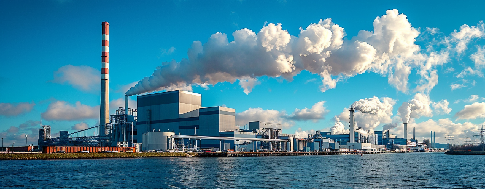

The Issue of Air Pollution
Air pollution in Ukraine remains a serious problem, especially in industrial regions and large cities. The main sources of pollution are emissions from power plants, metallurgical enterprises, transport, and domestic coal burning. High levels of air pollution increase the risk of cardiovascular and respiratory diseases and negatively affect the overall health of the population.
The government of Ukraine is taking measures to improve air quality, including modernizing industrial enterprises and implementing modern emission cleaning technologies. Public air quality monitoring is actively developing, allowing citizens to receive timely information and take necessary measures to protect their health. An important step in combating pollution is transitioning to renewable energy sources and reducing dependence on fossil fuels.
Environmental organizations and activists play a significant role in raising public awareness of the issue and encouraging active participation in its resolution. Achieving significant improvements in air quality requires comprehensive cooperation between the state, business, and the public.
The war in Ukraine has also negatively affected the environmental situation, leading to the destruction of industrial facilities and increased emissions of harmful substances. The reconstruction and modernization of industry after the war should consider environmental aspects and promote a transition to cleaner production.
Technological Solutions
Technological solutions play an important role in combating air pollution in Ukraine. Implementing modern air quality monitoring systems allows for accurate and up-to-date data on pollution levels in different regions of the country. This data is the basis for making informed decisions regarding environmental policy and implementing measures to improve air quality.
Data analysis software helps identify patterns and trends in pollution level changes, identify major sources of emissions, and assess the effectiveness of taken measures. This helps authorities and the public better understand the issue and develop effective strategies to address it.
Technological solutions also help raise public awareness of air quality and its impact on health. Mobile apps and online platforms provide citizens with real-time air quality information, allowing them to make informed decisions about their outdoor activities and take measures to protect their health.
Additionally, technologies can assist in implementing innovative solutions to reduce harmful emissions. For example, "smart city" systems can optimize traffic flows and reduce congestion, leading to lower vehicle emissions. Using drones to monitor industrial emissions allows for detecting violations and taking prompt action.
Overall, implementing technological solutions is an important step in combating air pollution in Ukraine. It allows for obtaining reliable information, analyzing data, raising public awareness, and implementing innovative solutions to improve air quality and protect citizens' health.
Examples of Successful Implementations
Several cities worldwide have successfully implemented such technologies, leading to significant improvements in air quality. There are numerous examples of successful implementation of monitoring and data analysis technologies to combat air pollution.
London, United Kingdom: London has an extensive network of sensors that monitor air pollution levels in real-time. This data is used to inform the public and make decisions regarding traffic restrictions during periods of high pollution. As a result, air pollution levels in London have decreased by 15% over the past 10 years.
Beijing, China: Beijing, known for its smog problem, has implemented an air quality monitoring system and strict emission limits for industrial enterprises. This has significantly reduced air pollution levels in the city and improved the health of its residents.
Los Angeles, USA: Los Angeles uses artificial intelligence technologies to analyze air pollution data and predict its levels. This allows the city to take measures to reduce emissions and protect public health in advance.
Seoul, South Korea: Seoul actively implements "smart" technologies to control air quality. For example, the city uses sensors on public transport to collect pollution data and inform passengers.